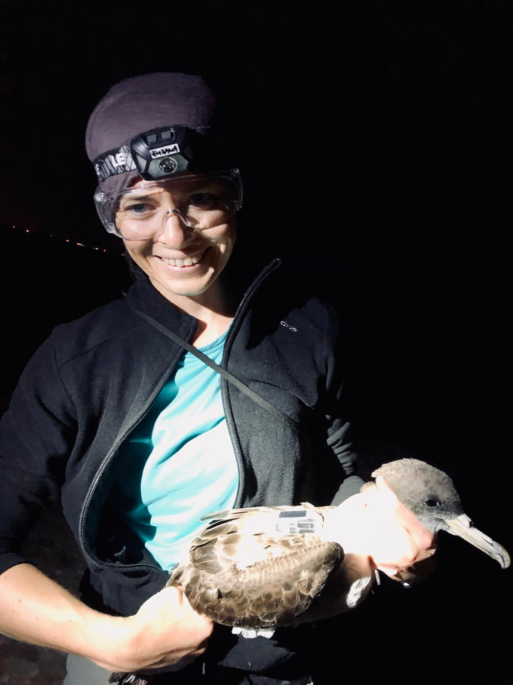

Fieldwork
I enjoy a lot doing fieldwork. So far, I have had the opportunity to participate in and lead several fieldwork campaigns, mostly during my PhD studies. Majority of the fieldwork has been focused on studying foraging and migratory movements of birds by deploying GPS and GLS (geolocaor, light lever logger) devices, taking blood and feather samples for stable isotope analysis.
Tracking of foraging movements of Cory’s and Scopoli’s Shearwater
Chafarinas Islands, Spain
August 2022

Migration and foraging ecology of Cory’s Shearwater by GLS and GPS
Gran Canaria, Canary Islands, Spain
June - July 2013, 2014, 2015
I was a group leader in the summer campaigns 2014 and 2015.
Breeding success of Cory’s Shearwater (chicks’ ringing, tissue sampling)
Gran Canaria, Canary Islands, Spain
October 2013 and 2014
Tracking of Balearic Shearwater by GLS and GPS devices
Sa Dragonera, Mallorca, Spain
April 2013
Tracking of Cory’s Shearwater and Bulwer’s Petrel by GLS devices
Montaña Clara, Chinijo Archipelago, Canary Islands, Spain
June 2012
Monitoring of breeding population of European Roller
Vallée de Baux, Provence, France
August 2009 - September 2010